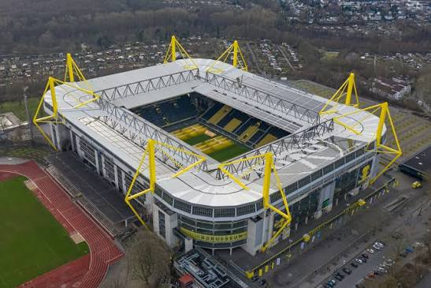
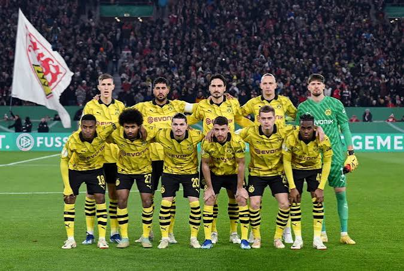

Founded
1909
Germany
Discover the history, stadium, legendary players, major trophies, records, and interesting facts about Borussia Dortmund.
Introduction
Borussia Dortmund is a professional soccer club based in Dortmund, Germany. Founded in 1909, the club has developed into one of Germany's most successful and recognizable soccer teams. Dortmund is famous for its black and yellow colors, passionate supporters, exciting players, and strong tradition in German and European soccer.
Dortmund plays its home matches at Signal Iduna Park, historically known as Westfalenstadion. The stadium opened in 1974 and has become famous for its large crowds and intense atmosphere. It is one of the largest soccer stadiums in Germany.
One of the stadium's most recognizable features is the South Stand, commonly known as the "Yellow Wall." Thousands of Dortmund supporters gather there during home matches, creating a wall of black and yellow behind one of the goals.
Many famous players have represented Borussia Dortmund, including Matthias Sammer, Michael Zorc, Marco Reus, Robert Lewandowski, Erling Haaland, Mats Hummels, Jürgen Kohler, Andreas Möller, and Roman Weidenfeller. Dortmund has also developed a reputation for giving talented young players opportunities at the highest level.

About the Club
Borussia Dortmund was founded on December 19, 1909, by a group of young men in Dortmund. The club's full name is Ballspielverein Borussia 09 e.V. Dortmund, which is why the abbreviation BVB is commonly used when referring to the team.
Dortmund gradually developed into an important club in German soccer. The team won its first German national championship in 1956 and successfully defended the championship in 1957. Another national championship followed in 1963.
Dortmund also became an important club in European soccer. In 1966, Borussia Dortmund defeated Liverpool to win the European Cup Winners' Cup. The victory made Dortmund the first German club to win a major UEFA European competition.
Another major period of success arrived during the 1990s. Dortmund won back-to-back Bundesliga championships in 1994-95 and 1995-96. The club then produced one of the greatest moments in its history during the following season.
In 1997, Borussia Dortmund reached the UEFA Champions League final against Juventus. Dortmund won the match 3-1 to become European champions for the first time. Karl-Heinz Riedle scored twice, while Lars Ricken scored a memorable goal shortly after entering the match as a substitute.
Dortmund experienced serious financial difficulties during the early 2000s. The club came close to a major financial crisis, but eventually recovered and began rebuilding its team and organization.
A new successful era began after Jürgen Klopp became manager in 2008. Klopp developed a young, energetic team that became famous for its pressing, speed, and attacking soccer. Dortmund won the Bundesliga in 2010-11 and then won both the Bundesliga and DFB-Pokal during the 2011-12 season.
Dortmund reached the Champions League final again in 2013, facing Bayern Munich at Wembley Stadium. Bayern won the match 2-1, but Dortmund's run to the final demonstrated the club's return to Europe's highest level.
Borussia Dortmund returned to the Champions League final in 2024. The club faced Real Madrid at Wembley and created several scoring opportunities before Madrid eventually won 2-0. Reaching another European final added a new chapter to Dortmund's long history in international competition.

Club Details
1909
Dortmund, Germany
Signal Iduna Park
Black and Yellow
Club Record
Alfred Preissler is Borussia Dortmund's all-time leading goalscorer in competitive matches with 177 goals. He represented Dortmund during the 1940s and 1950s and became one of the most important players in the club's early history.
Preissler helped Dortmund win German championships in 1956 and 1957. His goals and leadership made him a legendary figure at the club.
Success
Legendary Players
Borussia Dortmund has had a player win the Ballon d'Or while representing the club.
Matthias Sammer won the Ballon d'Or in 1996 after helping Borussia Dortmund win the Bundesliga and playing an important role in Germany's victory at UEFA Euro 1996. He later helped Dortmund win the Champions League in 1997.
Did You Know?